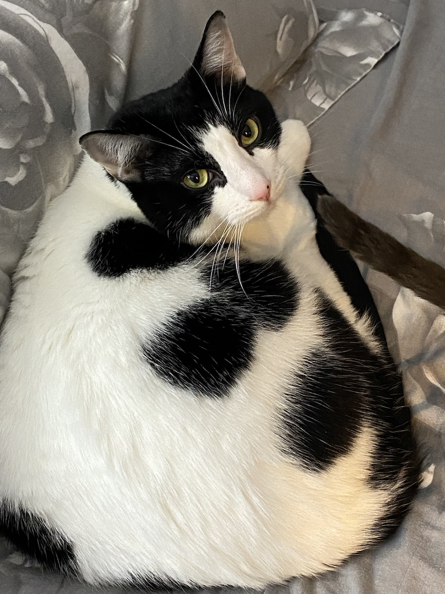
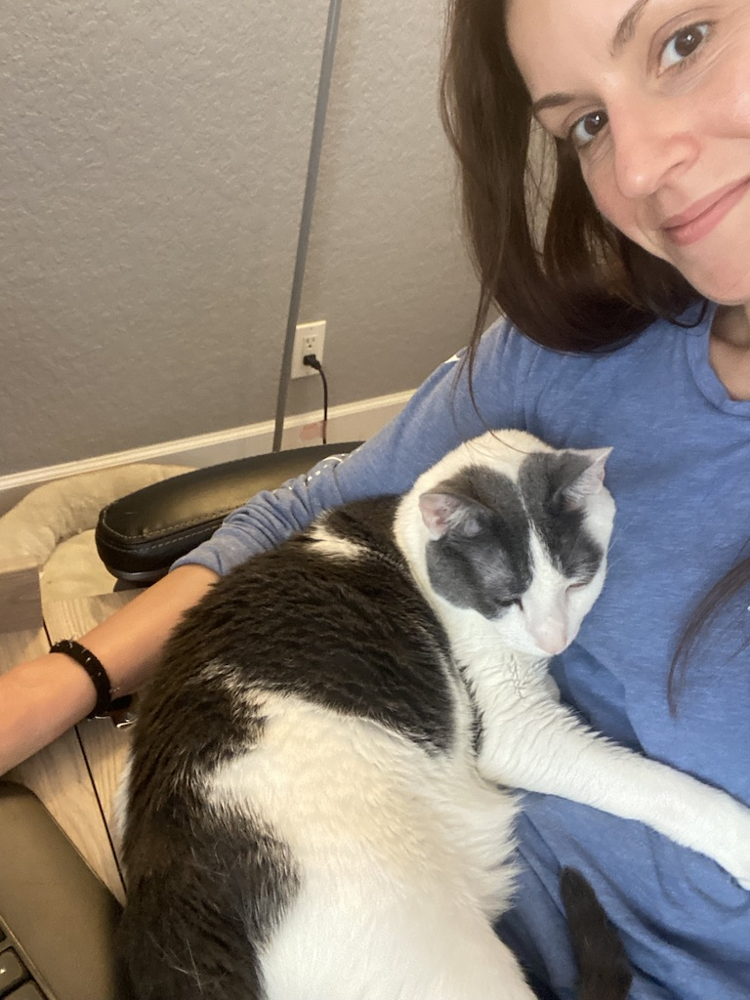
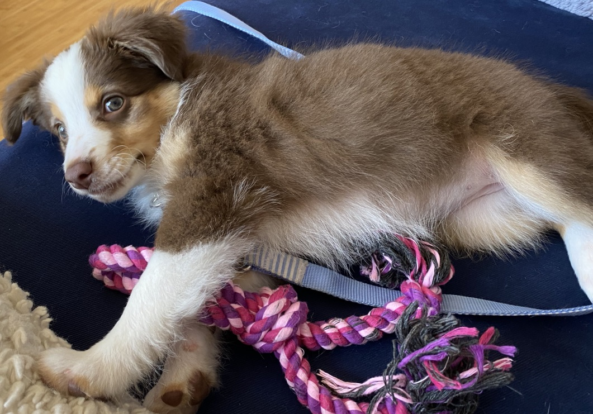

| Rambo | Romeo | Missy |
|---|---|---|
|  |  |  |
| Rambo is 5 yrs old and is a rescue, he is the most loving, social cat anyone has ever met. |
Romeo is also 5 yrs old and a rescue (adopted with Rambo) , he is very shy except with myself my fiance. |
Missy is our newest addition. She's super smart, full of energy, and is such a good girl! |
Whenever I have the opportunity to visit a Zoo or a Safari I never miss it. The San Diego Zoo has become one of the most amazing places in the world to me. If you've never been and are an animal lover you should definitly add it to your bucket list!
Animals are my happy place. They provide more joy, peace, and serenity than anything else in the world.
Running is, handsdown, my absolute favorite form of exercise. I'm addicted to that
Runner's High
that makes you feel like you're on top of the world. Running is also
the safest form of exercise for me inparticular due to my lack of coordination. 🤣